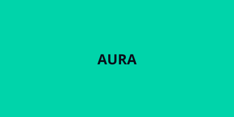
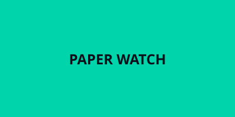
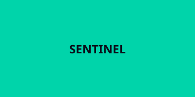
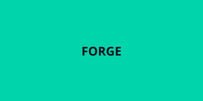
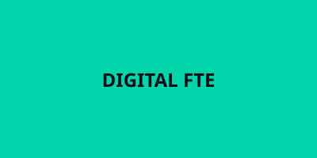

Aura Agentic Engine
What it does: An agentic engine that decomposes a high-level objective into a phased plan, executes each phase with specialised sub-agents, and verifies outputs against declared contracts before passing context forward.
My role: Designed the phase contract schema, built the planner that turns objectives into ordered phases, and implemented the verifier that checks each phase's output before the loop continues.

Paper Watch AI
What it does: Monitors research sources (arXiv, conference proceedings, GitHub) for papers matching a declared interest profile, extracts the contribution claim and method, and surfaces only the ones that advance the user's stated question — not just keyword matches.
My role: Built the retrieval pipeline with semantic filtering, designed the interest-profile schema, and wrote the summariser that outputs a one-paragraph "why this matters" for each hit.

Sentinel RAG Hub
What it does: A retrieval-augmented generation system that connects LLM responses to live external knowledge — API docs, internal wikis, codebases — so answers cite sources and stay grounded when the underlying data changes.
My role: Architected the retrieval router (vector + keyword + graph), implemented the citation enforcer that rejects uncited claims, and built the refresh loop that re-indexes on schedule or on webhook.

Forge Automation Suite
What it does: A collection of agent workflows that automate repetitive knowledge work: PR description generation from diffs, spec-to-test scaffolding, dependency update impact analysis, and release note synthesis from commit history.
My role: Defined the workflow DSL, built the GitHub Actions integration layer, and wrote the prompt templates that make each workflow produce review-ready output on first run.

Digital FTE / CRM Agent
What it does: An AI agent that operates a CRM like a human FTE would — it reads inbound emails, extracts action items, updates deal stages, drafts follow-ups, and flags stalled opportunities, all driven by a Spec-Driven Development contract that defines what "done" looks like for each task.
My role: Authored the spec (objectives → phases → verifiers), built the email→action extractor using function calling, and implemented the CRM write-back with idempotency guards.
